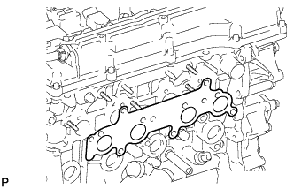
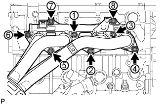
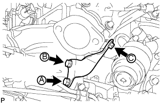
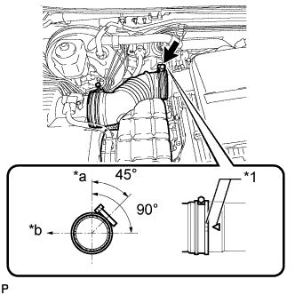

ВЫПУСКНОЙ КОЛЛЕКТОР > УСТАНОВКА |
| 1. УСТАНОВИТЕ ВЫПУКСНОЙ КОЛЛЕКТОР |
|  |
Установите новую прокладку.
|  |
Установите выпускной коллектор и закрепите его 8 новыми гайками в последовательности, показанной на рисунке.
| 2. УСТАНОВИТЕ ОПОРУ КОЛЛЕКТОРА |
|  |
Закрепите опору выпускного коллектора 3 болтами.
| 3. УСТАНОВИТЕ ПРИЕМНУЮ ТРУБУ В СБОРЕ |
 |
При помощи штангенциркуля замерьте длину пружины сжатия в свободном состоянии.
Установите приемную трубу на опору трубы.
 |
Для 3-дверных моделей:
С помощью молотка с пластмассовым покрытием и деревянного бруска запрессуйте новую прокладку до тех пор, пока ее поверхность не окажется на одном уровне с выпускным коллектором.
| *1 | Прокладка |
| *1 | Деревянный брусок |
Для 5-дверных моделей:
С помощью молотка с пластмассовым покрытием и деревянного бруска запрессуйте новую прокладку так, чтобы ее поверхность была на одном уровне с выпускным коллектором и приемной трубой.
Подсоедините приемную трубу к выпускному коллектору и закрепите ее 2 пружинами сжатия и 2 болтами. Поочередно затяните гайки в несколько этапов.
Для 3-дверных моделей:
Установите новую прокладку и подсоедините приемную трубу к центральной выпускной трубе с помощью 2 болтов.
Для 5-дверных моделей:
Подсоедините приемную трубу к центральной выпускной трубе и закрепите ее 2 пружинами сжатия и 2 болтами. Поочередно затяните гайки в несколько этапов.
| 4. УСТАНОВИТЕ КЛАПАН ПЕРЕКЛЮЧЕНИЯ ПОДАЧИ ВОЗДУХА В СБОРЕ |
Установите клапан переключения подачи воздуха (Нажмите здесь).
| 5. УСТАНОВИТЕ КОРПУС ВОЗДУШНОГО ФИЛЬТРА |
Установите корпус воздушного фильтра и закрепите его 3 болтами.
Установите фильтрующий элемент воздушного фильтра.
| 6. УСТАНОВИТЕ КРЫШКУ ВОЗДУШНОГО ФИЛЬТРА СО ШЛАНГОМ |
|  |
Установите воздушный фильтр и шланг, совместив его метку с меткой крышки воздушного фильтра, как показано на рисунке.
| *1 | Метка |
| *a | Верх |
| *b | Передняя сторона |
Затяните хомут шланга.
Введите в зацепление 4 зажима.
Подсоедините разъем датчика массового расхода воздуха и закрепите его 3 зажимами.
| 7. ПРОВЕРЬТЕ, НЕТ ЛИ УТЕЧКИ ОТРАБОТАВШИХ ГАЗОВ |
| 8. УСТАНОВИТЕ УПЛОТНЕНИЕ № 1 МЕЖДУ ФАРТУКОМ ПРАВОГО ПЕРЕДНЕГО КРЫЛА И РАМОЙ |
Закрепите уплотнение между фартуком переднего крыла и рамой 5 фиксаторами.
| 9. УСТАНОВИТЕ УПЛОТНЕНИЕ ФАРТУКА ЛЕВОГО ПЕРЕДНЕГО КРЫЛА |
Закрепите уплотнение фартука переднего крыла 5 фиксаторами.